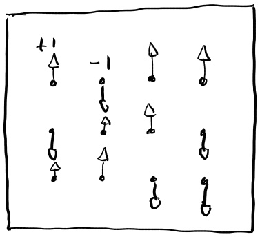
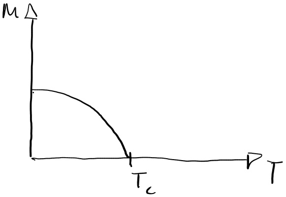
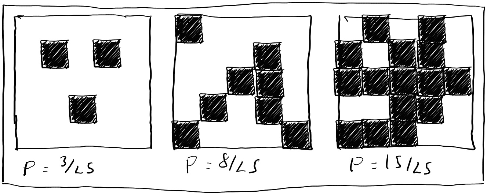
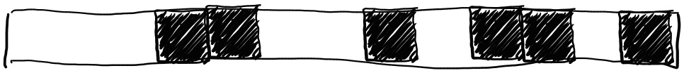
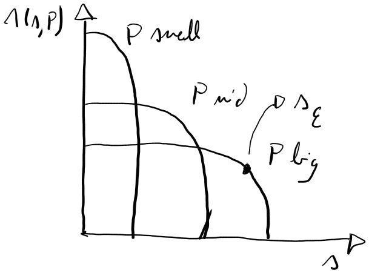
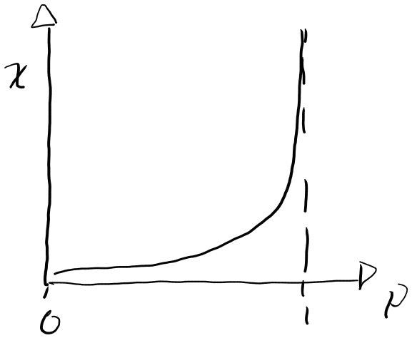

Wk 0.5 Background theory and concepts
Foreword
These notes represents a quick primer on the ising model, statistical mechanic and associated concepts considered useful prior to this lab’s start. This is informed by the provided labMaterials and my old Y2 notes and cross checked against(Rosser 1982) unless stated otherwise.
Statement of ising model
The ising model is a model magnet made up of a lattice of magnetic spin states:

With each spin state having a value of \(σ_i=±1\). Each spin states is affected by it’s neighbours and some global magnetic field B. As such, the system’s total energy follows:
With each spin state having a value of σ_i=±1. Each spin states is affected by it’s neighbours and some global magnetic field B. As such, the system’s total energy follows:
\(H = -\sum_{ij}J\sigma_{i}\sigma_{j}-\sum_{i}\sigma_{i}B\) Eq. 0.1 - Hamiltonian of ising model
Where the first summation represents nearest neighbour interactions, and the second summation represents aligment to the global magnetic field B. J represents some coupling strength between neighbours.
Importantly, the Ising model experiences a phase transition; with all elements well alligned at low temperatures, and disorganised at high temperatures. This results in high magnetisations at low temperatures, with 0 magnetisation past some phase transition temperature:

This occurs because a magnetised “well aligned” state minimises energy, whilst a non magnetised “disorded” state maximises entropy. As outlined by Eq. 0.8, systems will try to minimise energy and maximise entropy, with these competing dynamics moderated by the system temperature. As such, the ising model is expected to undergo a temperature dependent phase transition.
Basics of statistical mechanics:
Statistical mechanics represents a physics toolset to study systems of many interacting elements.
Key quantities: There are some key quantities in statistical mechanics worth defining initially:
H=system energy
T=system temperature
\(k_b=1.38⋅10^{−23} J/K\) Boltzman constant (Serway 2018)
\(Z=\sum exp(\frac{-h}{k_{b}T})\) Eq. 0.2 - Partition function
\(\beta = \frac{1}{k_{b}T}\) Eq. 0.3
Macro vs microstates:
Given that statistical systems are made up of many elements as in fig. 0.1:
A system’s “microstate” describes the specific configuration of all elements in the system, and have a probability:
\(p=\frac{1}{Z}exp(-\beta H)\) Eq. 0.4 - Boltzman distribution
“Macrostates” on the other hand represent particular observables of a system (I.E, temperature, total energy, magnetisation…). A given macrostate will be made up of many microstates. As such, macrostate probability is “weighed” by the number of corresponding microstates.
Entropy and helmholtz free energy:
Entropy is an important quantity in statistical mechanics, and represents some sense of “disorder” of a system:
\(S=-k_{b}\sum p\) \(ln(p)=\frac{dF}{dT}\) Eq. 0.5 - Entropy
\(S(T)=k_{b}ln(Z)+\frac{U}{T}\) Eq. 0.6 - Alternate entropy expression
\(\frac{dS}{dU}=\frac{1}{T}\) Eq. 0.7 - Entropy temperature relation
Importantly, statistical systems will attempt to both maximise entropy and minimise energy; thus leading to the idea of helmholtz free energy:
\(F(U,T)=U-TS(U)=-k_{b}Tln(Z)\) Eq. 0.8 - Helmholtz free energy
This “balance” between energy U and entropy S, mediated by temperature T generally illustrates the contradiction between a system maximising entropy and minimising energy. As such, The probability of a microstate Eq. 0.4 can be rewritten in terms of the Helmholtz free energy:
\(p(U,T)=\frac{1}{Z}exp(\beta F(U,T))\) Eq .0.9 - probability in terms of helmholtz energy
Observables:
Given these ideas, its useful to summarize some observables:
\(U=\langle H \rangle = \frac{dZ}{d\beta}\) Eq. 0.10 - Average energy
\(C=T\frac{d\langle E\rangle}{dT}\) Eq. 0.11 - Specific heat capacity
\(\langle \sigma \rangle = \frac{1}{Z}\sum\sigma_{i} exp(\beta H)\) Eq. 0.12 - Average spin (specific to ising model)
\(M=\sum\langle \sigma \rangle = \frac{dF}{d\beta}\) Eq. 0.13 - Magnetisation (specific to ising model)
Mean field theory:
The hamiltonian Eq. 0.1 is difficult to compute due to the nearest neighbour terms. A useful approximation is “Mean Field Theory”. This incorporates the effect of neighbours into the total magnetic field, creating a “mean field”:
\(H = -(Jzm+B)\sum_{i}(\sigma_{i}+\frac{NJz}{2}m^{2}) \ \ \ \ m = \langle\sigma_{i}\rangle = \langle\sigma_{j}\rangle\) Eq. 0.14 - Mean field ising hamiltonian
Single spin limit:
It is useful to consider an ising model with a single element. The hamiltonian of such a system becomes:
\(H=−B\sigma\) Eq. 0.16 - Single spin hamiltonian
So its statistical properties become:
\(Z=exp(-B\beta)+exp(B\beta)\) Eq. 0.17 - Single spin partition
\(\langle \sigma \rangle = tanh(\langle B\beta \rangle)\) Eq. 0.18 - single spin average spin
Applying a mean field theory by substituting in Eq. 0.15 to Eq. 0.18 yields:
\(\langle \sigma \rangle = tanh(\frac{B+zJ\langle \sigma\rangle}{k_{b}T})\) Eq. 0.19
This cannot be solved algebraically, but may be solved numerically for a stable system. This eventually yields either a trivial <σ≥0 solution, or some magnetic solution with phase transiton:
\(T_c=zJ/k_b\) Eq.0.20 - Single spin transition temperature
Phase transitions in percolation setups:
This lab studies phase transitions in the ising model. Percolations are a simple setup which illustrate the key features of phase transitions, and was fully explained by the “percolations” chapter of (Christensen and Moloney 2005).
A percolation system comprises a lattice of binary ([1] OR [0]) states as illustrated:

Each cell is assigned a state randomly according to a probability:
\(P(1)=p\) Eq. 0.21
\(p(0)=(1−p)\) Eq. 0.22
These cells form clusters of adjacent cells. Given an infinitely large lattice (unlike the finite lattice in fig 0.3), clusters may be finite in size, or infinite in size, spreading across the lattice. This is somewhat illustrated in fig 0.3, where the cluster for p=15/25 could plausibly extend infinitely beyond the 5x5 lattice.
As such, the phase transition of percolation models is between a phase where all clusters are finite in size, and a phase where clusters are infinite and span across the lattice.
1D percolation:
It is useful to consider the trivial case of a 1D lattice:

It is evident that infinite cluster can only occur if all cells are in a [1] state, which for an infinite lattice lim_(L→∞)L would require a “critical occupation probability” p_c=1.
However it is useful to illustrate certain tools to describe phase transitions in percolation.
Firstly, it is useful to count the number of clusters of a given size:
N(s,p, L)=# of clusters with s cells, given a probability p, with lattice size L. Eq. 0.23
Which in the 1D case evaluates to:
\(N_{d=1}(s,p,L)=L(1−p)^2 p^s\) Eq. 0.24
It is also useful to normalise this “cluster number density” as:
\(n_{d=1} (s,p)=(N_(d=1) (s,p,L))/L=L(1−p)^2 p^s\) Eq.0.25
Which generally follows as:

Note that any cell’s probability of belonging to a cluster of size s follows:
p_cluster (s)=sn(s,p) Eq. 0.26
The characteristic cluster size is a useful metric which generally follows:
\(s_\epsilon=−\frac{1}{ln(p)}\) Eq. 0.27
It is also interesting to note some “weighted average cluster size” weighted by cluster size:
\(\chi(\frac{1}{N_{occupied}}\sum_{k=1}^{N_{clusters}}s_{k}^{2}\) Eq. 0.28
Which in the 1D case yields:
\(\chi_{d=1}(p)=\frac{1+p}{1-p}\) Eq. 0.29

Finally it is also useful to note a “correlation function” g(r_i,r_j) which describes the probability of any two cells belonging to the same cluster which relates to the average size:
\(\sum_{r_i}g(r_{i}, r_{j}) = \chi(p)\) Eq. 0.30
2D percolation
Given these tools of a 1D percolation case, it is possible to expand to 2D in order to examine these phase transitions a bit more closely.
Particularly it is useful to characterise phase transitions in terms of order parameters and critical exponents.
As a general rule, the “order parameter” represents the n’th derivative of the system’s helmholtz free energy where a discontinuity appears; in the case of percolation, that is the probability of percolation p_∞.
Such order parameters can ~ generally be expressed in terms of critical exponents near the critical point:
\(p_{\infty}\propto|p-p_c|^\beta\) Eq 0.31
Where \(\beta\) is the critical exponent that characterises this phase transition. In a 2D percolation lattice, it has been found to a value \(\beta=5/36\)
The average cluster size also experiences such a discontinuity so may be expressed in terms of its own exponent:
\(\chi(p)\propto |p-p_c|^{\gamma}\) Eq 0.32
With a 2D percolation lattice having an exponent \(\gamma=43/18\).
Finite lattice effects
Note that a lot of effects are size dependent; however generally it is useful to extract these effects for an infinite lattice.
The 1D lattice in fig. 0.4 may illustrate this. Consider the boundary vs “bulk” cells. The bulk cells have 2 neighbors whilst the boundary cells only have one. As such, the bulk cells are more likely to be part of a cluster than the boundary ones. This noticeably distorts the effects of the system. However this effect becomes more negligeable as the lattice grows, with the number of bulk cells growing faster than the number of boundary cells.
Such finite lattice effects do however need to be accounted for, as they reduce the apparent discontinuity in phase transitions, making measurement of the critical exponents more difficult.